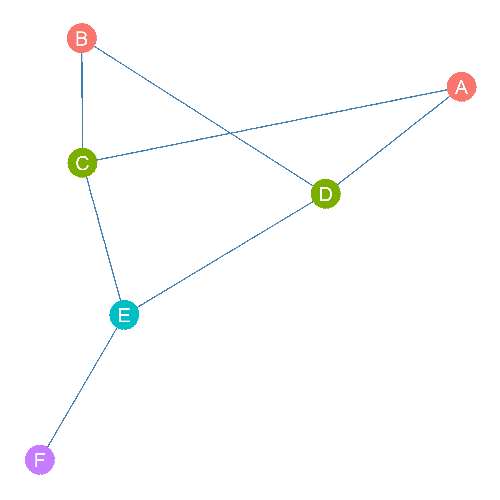

17 Equivalence and Similarity
17.1 The Position Approach
The basic idea behind the position approach to dividing up the nodes in a graph is to come up with a measure of how similar two nodes are in terms of their patterns of connectivity with others. This measure then can be used to partition the nodes into what are called equivalence or similarity classes. Nodes in the same equivalence class are said to occupy the same position in the social structure described by the network.
There are two main ways to partition nodes into equivalence classes. The first is based on the idea that two nodes occupy the same position is they have similar patterns of connectivity to the same other nodes in the graph. This is called structural equivalence (Lorrain and White 1971).
The second is based on the idea that two nodes are equivalent if they are connected to people who are themselves equivalent, even if these are not literally the same people. This is called regular equivalence (White and Reitz 1983).
This and the following lessons will deal mainly with various ways of partitioning the nodes in a network based on structural equivalence and its more relaxed cousin, structural similarity.
17.2 Structural Equivalence
Two nodes are structurally equivalent if they are connected to the same others. Thus, their patterns of connectivity (e.g., their row in the adjacency matrix) is exactly the same.
For instance in Figure 17.1, nodes C and D are structurally equivalent because they are connected to the same neighbors \(\{A, B, E\}\). In the same way, nodes A and B are structurally equivalent because they are connected to the same neighbors \(\{C, D\}\). Finally, nodes E and F occupy unique positions in the network because their neighborhoods are not equivalent to that of any other nodes. Node E is the only node that has a neighborhood composed of nodes \(\{C, D, F\}\), and node F is the only node that has a neighborhood composed of node \(\{E\}\) only. Perhaps F is the main boss, and E is the second in command.
| A | B | C | D | E | F | |
|---|---|---|---|---|---|---|
| A | 0 | 0 | 1 | 1 | 0 | 0 |
| B | 0 | 0 | 1 | 1 | 0 | 0 |
| C | 1 | 1 | 0 | 0 | 1 | 0 |
| D | 1 | 1 | 0 | 0 | 1 | 0 |
| E | 0 | 0 | 1 | 1 | 0 | 1 |
| F | 0 | 0 | 0 | 0 | 1 | 0 |
Table 17.1: Adjancency Matrix of an Undirected Graph
We can also see by looking at Table 17.1) that, indeed, the rows corresponding to the structurally equivalent nodes \(\{A, B\}\) and \(\{C, D\}\) in the corresponding adjacency matrix are indistinguishable from one another. The nodes that have unique positions in the network \(\{E, F\}\), also have a unique pattern of 0s and 1s across the rows of the adjacency matrix.
References
Lorrain, Francois, and Harrison C White. 1971. “Structural Equivalence of Individuals in Social Networks.” The Journal of Mathematical Sociology 1 (1): 49–80.
White, Douglas R, and Karl P Reitz. 1983. “Graph and Semigroup Homomorphisms on Networks of Relations.” Social Networks 5 (2): 193–234.